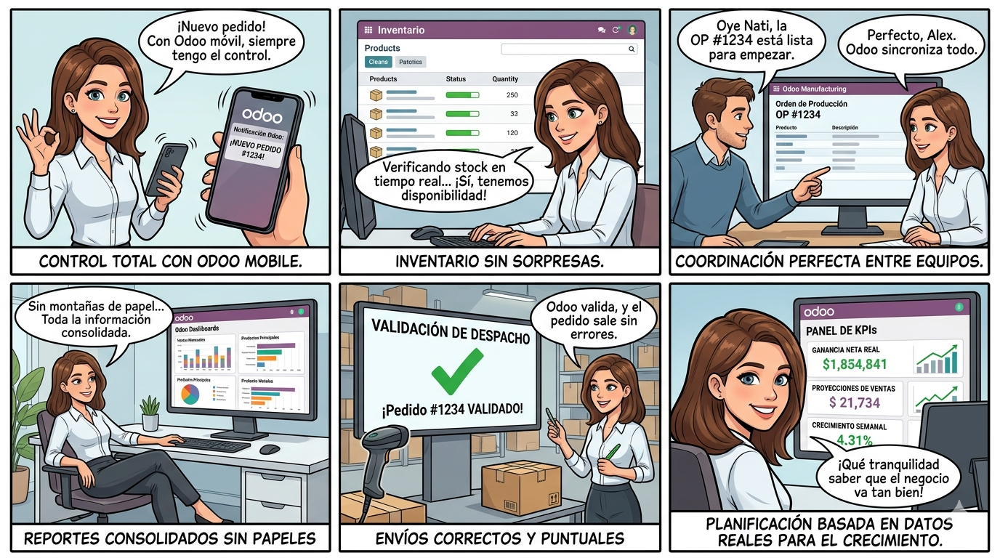
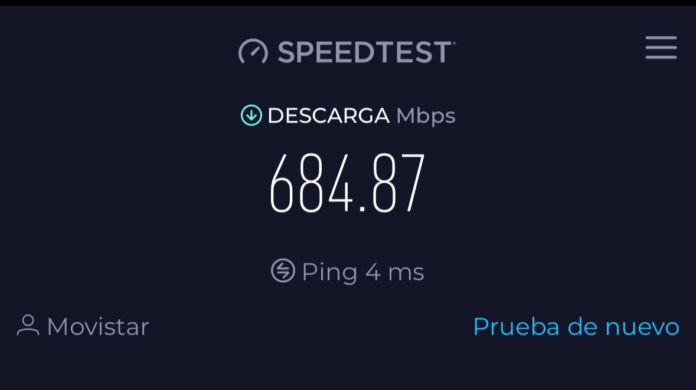
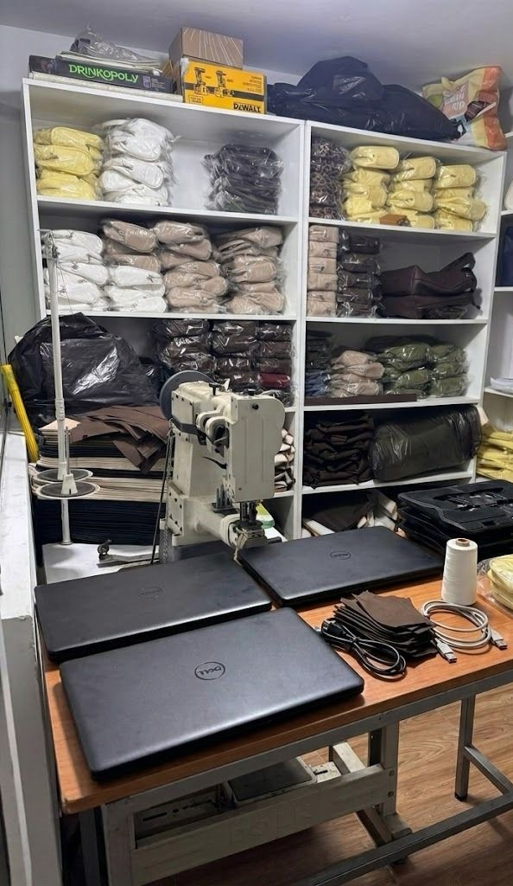
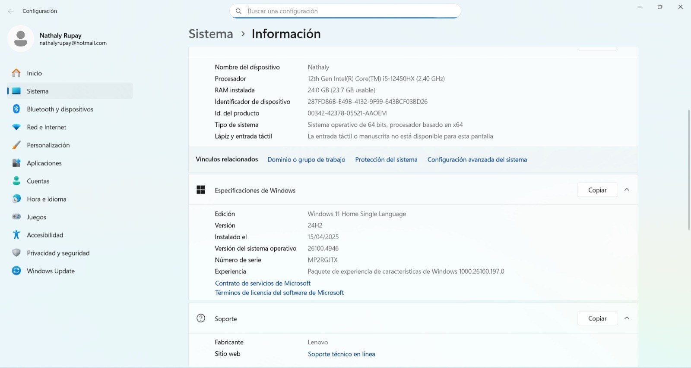
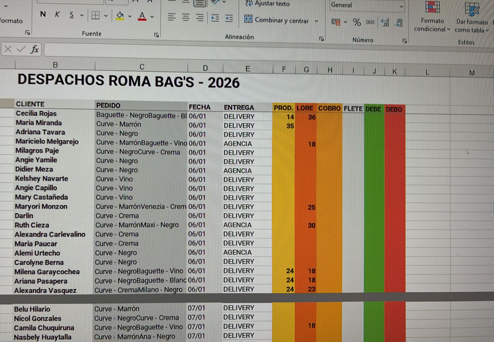

Contexto Organizacional de la Empresa
La presente investigación se centra en la microempresa "Roma Bag's", dedicada a la producción artesanal y comercialización de bolsos y carteras. El modelo de negocio opera bajo un enfoque dual: ventas al por mayor (con picos de demanda estacionales entre septiembre y enero) y ventas al por menor. La toma de decisiones está altamente centralizada en la gerencia, la cual no solo asume roles administrativos, sino que también absorbe la carga operativa de marketing, control de almacén y logística de entregas.
CAPÍTULO 01: Identificación y Análisis de Interesados
1.1. Entradas (Factores Ambientales y Activos del Negocio)
El objetivo de esta sección es establecer una línea base que permita comprender el entorno operativo y las limitaciones tecnológicas que rodean a la organización.
1.1.1. Estructura Organizacional
Al tratarse de una microempresa conformada por un equipo de diecinueve personas (18 trabajadores internos en el taller y 1 contratado para logística), la estructura jerárquica es horizontal y altamente dependiente de sus fundadores. Las áreas de trabajo se dividen de la siguiente manera:

1.1.2. Infraestructura y Factores Ambientales (EEFs)
De acuerdo con la teoría de gestión de proyectos, los Factores Ambientales de la Empresa (EEFs) se refieren a aquellas condiciones que no están bajo el control del equipo del proyecto, pero que influyen, restringen o dirigen el desarrollo del mismo, abarcando desde la cultura organizacional hasta la infraestructura tecnológica existente (Institute, 2017). En Roma Bag's, estos factores internos se configuran de la siguiente manera:
1.1.3. Caso de Negocio (Estado Actual y el "Dolor")
La necesidad de optimización en Roma Bag's nace de un cuello de botella crítico en la gestión de la información, el cual genera latencia operativa y pérdidas económicas directas.
Actualmente, existe un desfase crítico entre el mundo físico (producción y stock real) y el mundo digital (registros en Excel). La Gerencia General invierte un día completo a la semana (los sábados), de forma manual, intentando cuadrar la información de los cuadernos de consumo con los registros de venta, limitando severamente el tiempo gerencial que podría invertirse en la captación de nuevos clientes mayoristas.
Asimismo, el registro manual y desfasado genera constantes errores de stock ("falsos positivos"). Esta asincronía resulta en un promedio de nueve (9) pedidos incompletos al mes. A nivel financiero, esto obliga a la microempresa a asumir sobrecostos logísticos directos de entre S/. 10.00 y S/. 20.00 por cada incidencia, al tener que despachar un segundo motorizado (viaje doble que ocurre en aproximadamente 2 de cada 10 pedidos procesados).
Sumado a esto, la gerencia identifica que el tamaño físico del local es su principal limitante de crecimiento. La ineficiencia actual en la gestión de datos agrava esta percepción, ya que la desorganización impide maximizar el rendimiento de la capacidad instalada que ya poseen.
1.2. Metodología y Recopilación de Datos
1.2.1. Marco Metodológico de Recopilación
De acuerdo con las buenas prácticas de la Guía de los Fundamentos para la Dirección de Proyectos (PMBOK® 6ta Edición), la fase de diagnóstico exige un acercamiento directo y estructurado con los interesados clave. Para asegurar la fidelidad de los datos en "Roma Bag's" y evitar basar el diseño de la arquitectura de Inteligencia de Negocios en supuestos, el equipo de ingeniería seleccionó dos técnicas formales.
1.2.1.1. Justificación de la Técnica: Entrevista Semiestructurada (PMBOK® 6.1.2.2)
Según el PMBOK®, las entrevistas son un enfoque formal para obtener información directa. Se optó por la modalidad semiestructurada porque permite utilizar un guion base, pero otorga la flexibilidad para profundizar en los "dolores" operativos que el interesado revele. Esta técnica se aplicó en dos modalidades: virtual (para el enfoque gerencial y financiero) y presencial (para evaluar la actitud frente a la tecnología de otros miembros del taller).
1.2.1.2. Justificación de la Técnica: Observación (PMBOK® 6.1.2.3)
Definida como la técnica que proporciona una manera directa de ver a las personas en su ambiente. Su uso fue metodológicamente imperativo durante la visita presencial para validar empíricamente la línea base declarada por la gerencia: auditar el hardware real disponible, mapear las "zonas muertas" de red Wi-Fi y verificar físicamente el uso de los cuadernos de inventario que generan el desfase de información.
1.2.2. Diseño y Validación de Instrumentos
Para estandarizar la recolección, evitar sesgos y guiar las sesiones, se diseñaron herramientas de medición específicas, separando claramente la "técnica" (acción) del "instrumento" (documento).
1.2.2.1. Estructura del Guion de Entrevista (Ejes Temáticos)
El cuestionario principal (Ver Anexo 1.1 y 1.2) fue construido bajo un enfoque modular, dividiendo las preguntas en ejes estratégicos orientados al diagnóstico técnico:
1.2.2.2. Diseño de la Ficha de Registro de Campo
Herramienta tipo checklist y registro visual utilizada exclusivamente para la técnica de observación in situ. Orientada a levantar el inventario de equipos (PC y terminales móviles) y documentar el entorno físico del taller de producción.
1.2.2.3. Protocolo de Validación (Juicio de Expertos / Prueba Piloto)
Previo a su ejecución, los instrumentos fueron sometidos a una revisión interna por el equipo de proyecto (Camargo, Estrada, Alaluna y Portalanza) para garantizar que las interrogantes posean el nivel técnico exigido para un análisis de Sistemas de Información, asegurando la captura de datos duros (tiempo, dinero, stock) aplicables a modelos de Inteligencia de Negocios y predicción, tomando en consideración las directrices académicas del curso.
1.2.3. Bitácora de Ejecución y Levantamiento de Información
El levantamiento de requisitos se ejecutó de manera escalonada para contrastar la versión administrativa con la realidad operativa del taller. Las evidencias completas, fichas técnicas y transcripciones de estas sesiones se encuentran documentadas en la sección de Anexos del presente informe.
1.2.3.1. Sesión 01: Diagnóstico de Entorno (Virtual - Google Meet)
Enfoque: Entrevista administrativa orientada a descubrir el modelo de negocio, flujo de ventas, gestión actual en Excel y cuantificación de pérdidas de tiempo operativo.
Referencia: Detalles técnicos y transcripción en Anexos 2.1 y 3.1.
1.2.3.2. Sesión 02: Validación de Infraestructura y Stakeholders (Presencial - In Situ)
Ubicación: Taller de Producción "Roma Bag's".
Participante Principal: Natalie (Gerencia), con observación indirecta del socio de producción y entorno de trabajo.
Enfoque: Auditoría de hardware, mapeo de red de fibra óptica, validación de cuadernos físicos y perfilamiento de resistencia al cambio (Influyente Bloqueador). La sesión fue liderada por Camargo Rojas (Entrevista), Estrada Ruiz (Auditoría de Hardware), Alaluna Godinez (Apoyo Metodológico) y Portalanza Hurtado (Registro).
Referencia: Ficha técnica, panel fotográfico y transcripción en Anexos 2.3, 2.4 y 3.1.
1.2.3.3. Sesión 03: Entrevista Adicional (Profundización Cuantitativa)
Participante: Natalie (Gerencia General).
Enfoque: Entrevista semiestructurada orientada exclusivamente a la cuantificación de ineficiencias operativas (frecuencia de pedidos incompletos, sobrecostos logísticos exactos, tiempo real de cuadre semanal) e identificación de limitantes estratégicas como el espacio físico.
Referencia: Transcripción en Anexo 3.3.
1.2.4. Registro de Evidencias de Campo
El proceso de validación operativa y diagnóstico se encuentra sustentado en material audiovisual y documental, asegurando la trazabilidad de los requisitos del proyecto.
1.2.4.1. Panel de Evidencias Fotográficas y Capturas de Pantalla
Evidencia Presencial: Panel fotográfico del entorno operativo, infraestructura tecnológica (tres laptops y seis dispositivos móviles celulares) y registro manual (cuadernos de inventario) en el taller de Roma Bag's (Ver Anexo 2.4).
1.2.4.2. Repositorio de Documentación (Enlaces a Transcripciones y Audios)
Transcripción Presencial: Ver Anexo 3.1 (Fase 2).
(Nota: Se adjuntan hipervínculos a los repositorios en la nube en las fichas técnicas de los Anexos 2.1 y 2.3).
1.2.5. Procesamiento y Análisis de Hallazgos por Sesión
El análisis de la recolección de datos no se basa en la transcripción literal, sino en la extracción de "datos duros" (métricas de tiempo, dinero, recursos e infraestructura) que validan el caso de negocio y justifican la necesidad de la arquitectura de Inteligencia de Negocios.
1.2.5.1. Análisis de Resultados: Sesión 01 (Virtual - Google Meet)
Enfocada en el modelo de negocio y control gerencial. Los principales hallazgos fueron:
1.2.5.2. Análisis de Resultados: Sesión 02 (Presencial - In Situ)
Enfocada en infraestructura, validación de procesos físicos y perfilamiento de stakeholders. Los hallazgos confirmaron las hipótesis del proyecto:
1.2.5.3. Análisis de Resultados: Sesión 03 (Profundización Cuantitativa)
Enfocada en extraer métricas financieras y operativas exactas. Los hallazgos fueron:
1.2.5.4. Matriz Comparativa de Hallazgos Consolidados
Para orientar las fases posteriores del proyecto, se consolida la problemática (el "Dolor") con su respectivo impacto métrico extraído de las tres sesiones.
| Categoría | Hallazgo Operativo / Dolor Identificado | Impacto / Métrica |
|---|---|---|
| Tiempo | Consolidación y cuadre manual (cuaderno físico vs. Excel). | Pérdida de 1 día completo a la semana (sábados) exclusivamente en cuadrar cuentas. |
| Costo | Errores de "falsos positivos" en inventario y despachos incompletos. | Sobrecosto logístico de S/. 10 a S/. 20 por incidente, acumulando un promedio de 9 pedidos fallidos al mes. |
| Datos | Volatilidad de bases de datos por borrado manual o fallos de sincronización. | Riesgo alto de integridad; solo 8 meses de dataset histórico seguro disponible. |
| Recursos | Fragmentación operativa y "Mobile-First" forzado por baja cobertura Wi-Fi. | Equipos portátiles de alta gama (24GB RAM) subutilizados por falta de un sistema centralizado; dependencia de 6 celulares personales. |
1.3. Identificación y Registro de Interesados
En alineación con la Guía de los Fundamentos para la Dirección de Proyectos (PMBOK® 6ta Edición), el proceso de Identificar a los Interesados es fundamental para reconocer a todas las personas u organizaciones que pueden afectar, verse afectados o percibirse a sí mismos como afectados por una decisión, actividad o resultado del proyecto.
El presente capítulo formaliza el inicio del análisis de stakeholders para "Roma Bag's", separando a los actores según su ubicación respecto a los límites de la organización y documentando sus expectativas operativas actuales (su día a día), estableciendo así la línea base antes de introducir cualquier propuesta tecnológica.
1.3.1. Interesados Internos
Son aquellos actores que operan dentro de la estructura de la microempresa y cuyas labores cotidianas están directamente vinculadas al flujo de valor, desde la confección hasta la salida del producto.
1.3.2. Interesados Externos
Agrupa a las entidades o individuos que no forman parte de la planilla directa del taller, pero que interactúan comercialmente con Roma Bag's y se ven impactados por la eficiencia (o ineficiencia) de sus procesos internos.
1.3.3. Registro Base de Interesados
A continuación, se presenta el documento formal del proyecto (Stakeholder Register). De acuerdo con el rigor metodológico exigido, esta matriz documenta las expectativas frente a su labor actual, aislando temporalmente la solución de software propuesta para entender qué buscan realmente en su entorno de trabajo.
| ID | Interesado (Rol) | Tipo | Expectativas y Requisitos de su Labor Actual (Día a Día) |
|---|---|---|---|
| SH-01 | Gerencia General (Natalie) | Interno | - Conocer el monto exacto de ganancia neta mensual. - Recuperar un día completo de trabajo (los sábados) que actualmente invierte cruzando información manual entre cuadernos y Excel. - Eliminar la fuga de capital generada por los sobrecostos logísticos de despachos incompletos (aprox. 9 incidencias al mes). - Maximizar la capacidad de producción dentro de su espacio físico actual. |
| SH-02 | Jefe de Producción (Socio) | Interno | - Mantener un ritmo de trabajo fluido en costura y corte (30 a 40 unidades diarias) sin interrupciones
por tareas administrativas. - Contar con procesos estables que le indiquen qué producir sin presentar errores o fallos que retrasen la operación física del taller. |
| SH-03 | Personal de Ventas | Interno | - Necesitan inmediatez para confirmar el stock real a los clientes (especialmente durante
transmisiones en vivo) usando sus propios dispositivos móviles. - Buscan visibilidad clara de sus metas y resultados diarios para medir su propio desempeño y mantener la motivación. |
| SH-04 | Personal de Habilitado y Empaque | Interno | - Recibir órdenes claras y exactas sobre qué modelos separar y ensamblar, evitando confusiones manuales que generen reprocesos o envíos erróneos. |
| SH-05 | Clientes Mayoristas | Externo | - Que la mercadería solicitada esté completa al 100% y sea entregada a tiempo, especialmente en
temporada alta (febrero a mayo). - Obtener respuestas rápidas sobre disponibilidad de stock (actualmente experimentan demoras en la atención cuando la gerencia está ocupada cuadrando cuentas). |
| SH-06 | Logística (Motorizado) | Externo | - Recoger los paquetes completos y correctos en el primer intento para optimizar su ruta de
entrega. - Evitar los traslados dobles (reprocesos) que, a pesar de ser compensados económicamente por la tienda (S/. 10 a S/. 20 extra), retrasan su jornada laboral. |
1.4. Análisis Profundo de Interesados
En concordancia con los lineamientos del PMBOK® (6ta Edición), la simple identificación de los interesados es insuficiente para garantizar el éxito de un proyecto. Este capítulo profundiza en la evaluación analítica de los actores de "Roma Bag's", aplicando herramientas de clasificación avanzadas para determinar su capacidad de influencia, urgencia operativa y, fundamentalmente, su actitud frente a la introducción de cambios en su dinámica de trabajo.
1.4.1. Cubo de Interesados (Stakeholder Cube)
Para evaluar la complejidad del factor humano en la microempresa, se aplica el modelo tridimensional del Cubo de Interesados, el cual clasifica a los actores en 8 categorías según sus vectores de: Poder (+/-), Interés (+/-) y Actitud (+/-).
Con base en la información extraída de la entrevista (Capítulo 2), se clasifica a los actores clave:
| Interesado | Cubo | Poder | Interés | Actitud | Categoría PMBOK | Análisis Estratégico |
|---|---|---|---|---|---|---|
| Gerencia (Natalie) | 6 | + | + | + | Influyente activo partidario (6) | Busca urgentemente organizar sus datos para no perder 1 día semanal cuadrando información. Posee un trauma documentado a la pérdida de archivos y rechaza herramientas impersonales (ej. descartó IA por ser "robótica"). |
| Socio (Producción) | 2 | + | + | - | Influyente activo bloqueador (2) | Hallazgo Crítico: Tiene autoridad compartida. Su intolerancia a las fallas lo convierte en un alto riesgo ("Basta que vea un error, ya no lo usaría"). Su prioridad es no detener la producción de 30-40 unidades diarias. |
| Personal de Ventas | 7 | - | + | + | Insignificante activo partidario (7) | Jóvenes (17-35 años) muy familiarizados con dispositivos móviles. Tienen alta disposición a adoptar dinámicas que les permitan confirmar stock rápido y ver sus metas visualmente. |
| Personal de Empaque | 7 | - | + | + | Insignificante activo partidario (7) | Requieren recibir instrucciones precisas para separar y embalar modelos. Su actitud es favorable si el cambio significa reducir confusiones y reprocesos físicos en su área. |
| Logística (Motorizado) | 7 | - | + | + | Insignificante activo partidario (7) | Externos que sufren los errores de despacho. Aunque cobran un extra (S/. 10 - S/. 20) por el viaje doble, su actitud sería partidaria ante cualquier mejora que evite retrasar sus rutas diarias. |
| Mayoristas | 7 | - | + | + | Insignificante activo partidario (7) | Su principal interés es recibir pedidos completos en la temporada alta (feb-mayo). |
1.4.2. Modelo de Prominencia (Salience Model)
Este modelo clasifica a los interesados según su Poder (autoridad para influir), Legitimidad (relación adecuada y justificada con el proyecto) y Urgencia (necesidad de atención inmediata). Esta priorización dictará a quién se debe atender primero durante el diseño de la solución.
| Interesado | Poder | Legitimidad | Urgencia | Categoría | Justificación del Nivel de Prioridad |
|---|---|---|---|---|---|
| Gerencia General | SÍ | SÍ | SÍ | Crítico (7) | Es la dueña y sufre una urgencia operativa financiera severa (pierde horas administrativas y asume sobrecostos logísticos de S/. 20 por error). Exige atención inmediata. |
| Socio (Producción) | SÍ | SÍ | NO | Dominante (4) | Tiene poder y legitimidad, pero carece de urgencia administrativa, ya que su enfoque es netamente físico (confección ininterrumpida). |
| Personal de Ventas | NO | SÍ | SÍ | Dependiente (6) | Tienen la urgencia operativa de conocer el stock real sin asincronías para no perder ventas, pero carecen de autoridad para imponer nuevas herramientas al taller. |
| Personal de Empaque | NO | SÍ | SÍ | Dependiente (6) | Tienen urgencia por recibir órdenes claras para no armar pedidos equivocados (causa de los reprocesos logísticos), pero carecen de poder formal. |
| Mayoristas | NO | SÍ | SÍ | Dependiente (6) | Tienen la urgencia de recibir su mercadería sin errores de inventario ni demoras, pero dependen de la gerencia para obtenerla. |
| Logística (Motorizado) | NO | SÍ | SÍ | Dependiente (6) | Tienen la urgencia de recibir paquetes correctos (9 incidencias al mes actuales) para no afectar sus tiempos de ruta de entrega. |
1.4.3. Dirección de la Influencia
Este mapeo clasifica a los interesados según el flujo de autoridad y comunicación dentro de la estructura de Roma Bag's, permitiendo al equipo del proyecto saber cómo canalizar los requerimientos.
1.4.4. Análisis de Riesgos y Expectativas (Mapeo de Resistencia)
El levantamiento de datos evidenció barreras culturales (y experiencias previas) que podrían hacer fracasar la implementación de cualquier cambio metodológico. Se han identificado dos focos de riesgo principal ligados a la resistencia al cambio:
La Expectativa: La gerencia desea organizar su información para recuperar un día de trabajo semanal e identificar oportunidades de venta, pero exige mantener el control total sobre los datos.
La Resistencia: Existe un trauma documentado a la corrupción de archivos ("el Excel del año pasado lo borré"). Adicionalmente, posee un rechazo explícito a las tecnologías que percibe como abstractas o antinaturales (descartó un chatbot de IA por ser "muy robótico").
Impacto en el Proyecto: Cualquier propuesta que reemplace bruscamente su Excel, que sea percibida como compleja, o que no ofrezca garantías visibles de respaldo, será rechazada de inmediato.
La Expectativa: El socio exige que el ritmo de producción del taller no se detenga jamás por tareas administrativas o "de llenado de datos".
La Resistencia: Clasificado como "Influyente Bloqueador". Su resistencia es condicional; adoptará nuevas dinámicas de trabajo si funcionan fluidamente, pero saboteará pasivamente el proceso (dejando de registrar información) ante el más mínimo fallo de red o lentitud operativa.
Impacto en el Proyecto: Exige que cualquier herramienta propuesta posea una etapa de pruebas (testing) exhaustiva en un entorno controlado. No habrá una "segunda oportunidad" para generar confianza en el área física de producción.
CAPÍTULO 02: Planificación del Involucramiento de los Interesados
Según el PMBOK® (6.ª Ed.), este proceso consiste en desarrollar enfoques para involucrar a los interesados basados en sus necesidades, expectativas, intereses y el posible impacto en el éxito del proyecto (Institute, 2017, p. 523). El presente capítulo documenta el proceso completo para el proyecto BI de "Roma Bag's" siguiendo la estructura: Entradas → Herramientas y Técnicas → Salidas.
2.1. ENTRADAS
2.1.1. Acta de Constitución del Proyecto
El Acta de Constitución formaliza la existencia del proyecto y otorga al equipo UNTELS la autoridad para aplicar recursos. Para Roma Bag's establece como objetivo central la implementación de un tablero de control BI con patrocinio operativo de la Gerencia General (Natalie), legitimando todas las acciones de involucramiento definidas en el presente plan.
2.1.2. Plan para la Dirección del Proyecto
2.1.3. Documentos del Proyecto
| Documento | Contenido Relevante para el Involucramiento | Referencia |
|---|---|---|
| Registro de Supuestos | Se asume disponibilidad semanal de la Gerencia para validaciones. Se asume que el Socio no vetará el sistema si las pruebas previas son exitosas. | Cap. 01, sección 1.4.4 |
| Registro de Cambios | Gestión de cambios motivados por nuevas necesidades identificadas en sesiones (ej. integración del taller alterno de la hermana de Natalie). | Sesión 02, Anexo 3.1 Fase 2 |
| Registro de Incidentes | Incidente crítico: pérdida del registro histórico 2024 por borrado accidental. Condiciona la arquitectura de respaldo del tablero propuesto. | Sesión 02: 'Lo de 2024 creo que ya lo borré.' |
| Cronograma del Proyecto | Capacitaciones y demostraciones deben evitar temporada alta (sept–enero). El piloto debe ejecutarse entre febrero y agosto. | Sesión 02: Estacionalidad confirmada por Natalie. |
| Registro de Riesgos | R-01: Veto del Socio ante primer fallo. R-02: Rechazo de la Gerencia por migración abrupta. R-03: Percepción de vigilancia del personal de ventas. | Cap. 01, sección 1.4.4 |
| Registro de Interesados | Identifica 6 interesados formales (SH-01 a SH-06) con expectativas, tipo y nivel de influencia. Base del análisis de involucramiento. | Cap. 01, sección 1.3.3 |
2.1.4. Acuerdos y Requisitos de Involucramiento
Tras la fase de diagnóstico y durante las sesiones iniciales, se establecieron con la Gerencia las siguientes condiciones innegociables para asegurar su disposición, participación y tiempo en el proyecto:
2.1.5. Factores Ambientales de la Empresa (EEFs)
Según el PMBOK® (6.ª Ed.), los EEFs son condiciones fuera del control del equipo que influyen, restringen o dirigen la planificación (Institute, 2017, p. 38). Para Roma Bag's se configuran en cuatro dimensiones validadas empíricamente en las tres sesiones de levantamiento.
A. Cultura Organizacional y Estructura de Toma de Decisiones
| Dimensión | Situación Real en Roma Bag's | Evidencia Documental |
|---|---|---|
| Estructura organizacional | Horizontal, 19 personas (18 internos + 1 motorizado). Sin subgerentes. La Gerencia concentra finanzas, marketing, almacén y logística. | Cap. 01, §1.1. Sesión 02: 'Básicamente, ventas es marketing en mi caso.' |
| Cultura de toma de decisiones | Centralizada en la Gerencia (Natalie). En su ausencia, el Socio asume autoridad operativa. Ninguna decisión tecnológica se delega al personal. | Sesión 02: '¿Hay alguien que tome las decisiones por ti? — Sí, él. Mi socio.' Cap. 01 §1.4.1. |
| Estilo de liderazgo | Pragmático y orientado a resultados. Evalúa la tecnología por el tiempo y dinero que ahorra, no por sofisticación. Desconfía de soluciones abstractas. | Sesión 01: 'Si me organiza mejor, podría tener más tiempo para buscar más clientes.' Sesión 03: problema principal = espacio físico. |
| Clima político interno | El Socio posee autoridad de veto sobre las herramientas del taller. Su resistencia condicional (intolerancia a la falla) es el principal factor político a gestionar. | Sesión 02: 'Si algo no le cuadra, ya no lo quiere usar. Él tiene autoridad en el taller.' Cap. 01 §1.4.4. |
| Gestión del conocimiento | Sin documentación formal de procesos. Conocimiento operativo tácito en la Gerencia. Único registro físico: cuadernos de inventario. | Cap. 01 §1.2: 'El control de insumos se realiza de forma manual mediante cuadernos físicos.' Anexo 2.4, Fig. 4. |
Fuente: Sesiones 01, 02 y 03. Cap. 01 §1.1, Cap. 01 §1.4.1.
B. Infraestructura Tecnológica y Conectividad
| Elemento | Estado Real Verificado | Implicancia para el Involucramiento |
|---|---|---|
| Hardware disponible | Tres (3) equipos portátiles de alta capacidad de procesamiento (ej. Lenovo, Intel Core i5 de 12va Gen., 24 GB RAM) subutilizados por falta de integración, más seis (6) celulares para ventas. | El cuello de botella no es el hardware, sino el flujo fragmentado de datos. Las comunicaciones del proyecto (demos, avances) deben funcionar obligatoriamente en formato celular (mobile-first). |
| Conectividad | Fibra óptica Movistar con cobertura deficiente. Zonas muertas en área de ventas en vivo. Personal usa datos móviles propios como contingencia. | Comunicaciones del proyecto vía WhatsApp y Meet, compatibles con datos móviles. No depender del Wi-Fi del taller. |
| Software actual | Excel + autoguardado en Google Drive (ventas). Cuadernos físicos (inventario). Sin ERP ni sistema integrado. | El tablero debe convivir con el Excel inicialmente para no generar rechazo. Transición progresiva obligatoria. |
| Canales operativos | WhatsApp (proveedores, mayoristas, motorizado), transmisiones en vivo (ventas minoristas), Google Drive (repositorio). | El equipo UNTELS adopta WhatsApp como canal primario con la Gerencia: único canal de respuesta rápida garantizado. |
| Soporte técnico | Ausencia total de personal de TI. Incidencias manejadas empíricamente por la Gerencia. | El equipo UNTELS asume el rol de soporte técnico. Documentación de usuario debe ser autosuficiente. |
Fuente: Cap. 01 §1.2. Auditoría hardware: Estrada Ruiz (Sesión 02, Anexo 2.3). Evidencia: Anexo 2.4, Fig. 5.
C. Clima de Adopción Tecnológica y Resistencia al Cambio
| Actor | Perfil | Descripción del Patrón | Evidencia |
|---|---|---|---|
| Gerencia General (Natalie) | Adoptante con reservas | Desea la herramienta y visualiza su valor, pero posee un 'trauma documental' previo (pérdida del Excel 2024) que genera miedo a perder datos. Adopción condicionada a garantías de integridad. | Sesión 01: 'Mi mayor preocupación sería perder la información.' Sesión 02: 'Lo de 2024 creo que ya lo borré.' |
| Socio de Producción | Bloqueador condicional | No se opone formalmente, pero tolerancia nula ante fallos. Un solo error visible activará su veto, paralizando el uso del tablero en toda el área de producción. | Sesión 02: 'Basta que vea un error, ya no lo usaría. Si él pone resistencia, se dejaría de lado.' Cap. 01 §1.4.1. |
| Personal de Ventas (17–35 años) | Promotor digital | Alta familiaridad tecnológica. Nativos digitales que trabajan cotidianamente con celulares. Segmento de menor resistencia y mayor potencial como embajadores internos. | Sesión 02: 'Tienen entre 17 y 35 años. Lo verían como una motivación.' Cap. 01 §1.4.1. |
Fuente: Cubo de Interesados (Cap. 01 §1.4.1) y Análisis de Riesgos (Cap. 01 §1.4.4). Transcripciones Sesiones 01, 02 y 03.
D. Condiciones de Mercado y Contexto Operativo del Negocio
| Condición | Situación Real en Roma Bag's | Impacto en el Involucramiento |
|---|---|---|
| Estacionalidad | Venta minorista intensa: sept–enero (festividades). Venta mayorista prioritaria: feb–mayo. | Capacitaciones y demos deben evitar sept–enero. El piloto debe ejecutarse fuera del pico de temporada alta. (Sesión 02: confirmado por Natalie.) |
| Modelo dual y disperso | Opera como fabricante (taller propio + taller alterno de la hermana) y canal de ventas (mayorista y minorista). Información fluye sin integración. | El tablero debe consolidar información de ambas fuentes de producción. (Sesión 02: 'Ella también saca su cuenta en Excel.') |
| Cuantificación de ineficiencias | (a) 1 día completo semanal perdido en cuadre; (b) 9 pedidos incompletos/mes; (c) doble envío en 2/10 pedidos — S/. 10–20 extra por incidente. | Estos datos constituyen la métrica base (línea base de dolor) para demostrar el ROI del proyecto a la Gerencia. (Sesión 03, íntegramente.) |
| Limitación del espacio físico | La gerencia identifica el espacio físico como el principal cuello de botella, por encima de la tecnología. | El tablero debe posicionarse como habilitador de crecimiento (más ventas = más espacio posible), no como fin en sí mismo. (Sesión 03: 'Si fuera más grande, harían más cantidad.') |
| Antecedente de IA | La gerencia descartó un chatbot IA para WhatsApp por considerarlo 'muy robótico'. Existe frustración previa con tecnología impersonal. | El tablero debe presentarse como herramienta visual e intuitiva con datos que la gerencia ya conoce, nunca como IA abstracta. (Sesión 03: 'La descartó porque le pareció muy robótica.') |
Fuente: Transcripciones Sesión 02 (Anexo 3.1 Fase 2) y Sesión 03. Matriz Comparativa Cap. 01 §1.2.5.3.
2.1.6. Activos de los Procesos de la Organización
2.2. HERRAMIENTAS Y TÉCNICAS
2.2.1. Recopilación de Datos — Entrevistas
Según el PMBOK® (6.ª Ed.), la recopilación de datos permite reunir información relevante sobre los interesados, sus expectativas y el entorno del proyecto (Institute, 2017, p. 526). Para Roma Bag's se ejecutaron tres sesiones formales aplicando entrevista semiestructurada (PMBOK® §6.1.2.2) y observación directa — Job Shadowing (PMBOK® §6.1.2.3).
Repositorio de Documentos y Evidencias del Proyecto
| N.° | Documento / Evidencia | Descripción y Referencia |
|---|---|---|
| 01 | Guion de Entrevista Semiestructurada — Sesión 01 (Virtual) | Instrumento de 15 preguntas en 4 bloques: Entorno, Dolor del Negocio, Expectativas Técnicas y Stakeholders. Aplicado a Natalie vía Google Meet el 21 de abril de 2026. Ver Anexo 1.1. |
| 02 | Guion de Entrevista de Campo — Sesión 02 (Presencial) | Instrumento semiestructurado in situ de 18 preguntas en 5 bloques: EEFs, Dolor Operativo, Datos Estratégicos, Resistencia al Cambio y Viabilidad. 4 de mayo de 2026. Ver Anexo 1.2. |
| 03 | Guion de Entrevista Adicional — Sesión 03 | Instrumento de profundización cuantitativa. 14 de mayo de 2026, 1:30 p.m., ~10 minutos. Entrevistadora: Camargo Rojas. Ver Anexo 1.3. |
| 04 | Transcripción de la Entrevista Virtual — Sesión 01 | Registro literal del diálogo entre el equipo UNTELS y la Gerencia. Fuente primaria de métricas de ineficiencia y expectativas del patrocinador. Ver Anexo 3.1. |
| 05 | Transcripción de la Visita Presencial — Sesión 02 (Fase 2) | Registro del diálogo in situ. Contiene el perfilamiento de resistencia del Socio y la validación de infraestructura. Ver Anexo 3.1 (Fase 2). |
| 06 | Transcripción de Entrevista Adicional — Sesión 03 | Fuente de métricas cuantitativas clave: 9 pedidos incompletos/mes, doble envío en 2/10 pedidos (S/. 10–20), 1 día semanal de cuadre. Ver Anexo 3.3. |
| 07 | Panel Fotográfico del Taller — Sesión 02 | Registro fotográfico del entorno operativo: área de producción, 3 laptops, 6 celulares y cuadernos físicos. Ver Anexo 2.4, Figuras 2–5. |
| 08 | Registro de Interesados — Stakeholder Register | Identifica a los seis interesados clave (SH-01 a SH-06) con expectativas, tipo y rol. Ver Cap. 01 §1.3.3. |
| 09 | Análisis Profundo — Cubo, Prominencia y Dirección de la Influencia | Clasifica a los interesados por Poder/Interés/Actitud, Poder/Legitimidad/Urgencia y flujo de autoridad. Ver Cap. 01 §1.4. |
Bitácora de Sesiones de Recopilación
| Sesión | Modalidad | Fecha y Hora | Técnica PMBOK® | Hallazgos Clave |
|---|---|---|---|---|
| Sesión 01 | Virtual (Google Meet) | 21 de abril de 2026 — 11:10–12:00 h | Entrevista semiestructurada (§6.1.2.2). Líder: Camargo Rojas | Participación de la Gerencia: Partidario. Barrera: miedo a pérdida de datos. Expectativa de negocio: crecer +50 % en ventas. Restricción operativa: prefiere visualización en celular. |
| Sesión 02 | Presencial (Taller Roma Bag's) | 4 de mayo de 2026 — 11:20–12:00 h | Entrevista semiestructurada (§6.1.2.2) + Observación directa — Job Shadowing (§6.1.2.3) | Socio confirmado como Influyente Bloqueador. Personal de Ventas: Promotor digital. Auditoría hardware: 3 laptops de alta capacidad (24GB RAM) y 6 celulares. Zonas muertas Wi-Fi verificadas. |
| Sesión 03 | Presencial — Entrevista de profundización | 14 de mayo de 2026 — 1:30 p.m. (~10 min). Entrevistada: Natalie (Gerencia) | Entrevista semiestructurada (§6.1.2.2). Cuestionario temático de profundización cuantitativa | Métricas cuantitativas: 9 pedidos incompletos/mes; doble envío en 2/10 pedidos; S/. 20 extra/error; 1 día completo semanal perdido en cuadre. Limitante estratégica: espacio físico del taller. |
2.2.2. Análisis de Datos
2.2.3. Toma de Decisiones — Priorización
Con base en el análisis del Cubo de Interesados (Cap. 01 §1.4.1) y el Modelo de Prominencia (Cap. 01 §1.4.2), el equipo UNTELS priorizó a los interesados en el siguiente orden de atención estratégica:
2.2.4. Representación de Datos — Matriz Poder / Interés
La Matriz Poder/Interés clasifica a los interesados en cuatro cuadrantes según su poder (capacidad de influir) e interés (grado en que los resultados les afectan), determinando la estrategia de gestión más adecuada (Institute, 2017, p. 507).
| Cuadrante | Interesado | Estrategia | Evidencia |
|---|---|---|---|
| GESTIONAR DE CERCA — Alto Poder / Alto Interés | Gerencia General — Natalie (SH-01) | Involucramiento continuo. Demostración de valor de negocio. Énfasis en respaldo de datos y coexistencia con Excel. | Sesión 01: 'Si me organiza mejor, podría tener más tiempo para buscar más clientes.' |
| GESTIONAR DE CERCA — Alto Poder / Alto Interés | Socio / Jefe de Producción (SH-02) | Participación controlada y preventiva. Solo se le expone a versiones estables. Comunicación centrada en continuidad operativa. | Sesión 02: 'Basta que vea un error, ya no lo usaría. Él tiene autoridad en el taller.' |
| MANTENER INFORMADOS — Bajo Poder / Alto Interés | Personal de Ventas (SH-03) | Prototipos móviles, visualización de metas. Potencial promotor interno del sistema. | Sesión 02: 'Lo verían como una motivación.' |
| MANTENER INFORMADOS — Bajo Poder / Alto Interés | Personal de Empaque (SH-04) | Capacitación corta. Énfasis en reducción de reprocesos y claridad de órdenes. | Sesión 01: 'Para los que empacan, no creo [mostrarles gráficos].' |
| MANTENER INFORMADOS — Bajo Poder / Alto Interés | Clientes Mayoristas (SH-05) | Involucramiento indirecto. Mejora en tiempos de entrega y exactitud del stock. | Sesión 03: '9 pedidos incompletos por mes.' |
| MONITOREAR — Bajo Poder / Bajo Interés | Logística / Motorizado (SH-06) | Reducir dobles viajes. No requiere acceso al sistema. | Sesión 03: 'El motorizado cobra por ese segundo viaje extra. Gasto: S/. 20.' |
| MONITOREAR — Bajo Poder / Bajo Interés | Taller Alterno / Proveedores | Monitoreo puntual. Sin involucramiento activo. | Sesión 02: 'Mi hermana me apoya con otra producción paralela.' |
Fuente: Cubo de Interesados (Cap. 01 §1.4.1), Modelo de Prominencia (Cap. 01 §1.4.2) y Sesiones 01, 02 y 03. Referencia: Institute (2017, p. 507).
2.2.5. Reuniones
Las tres sesiones de levantamiento de información constituyeron reuniones formales del proyecto documentadas con fichas técnicas, transcripciones y evidencia fotográfica (Ver Anexos 2.1, 2.3, 2.5 y 3.1, 3.3). Adicionalmente, se programarán reuniones de validación con la Gerencia con frecuencia semanal vía WhatsApp y reuniones presenciales por hito de avance, conforme al Plan de Comunicaciones.
2.3. SALIDAS: Plan de Involucramiento de los Interesados
Según el PMBOK® (6.ª Ed.), el Plan de Involucramiento de los Interesados es un componente del plan para la dirección del proyecto que identifica las estrategias y acciones requeridas para promover el involucramiento productivo de los interesados en la toma de decisiones y la ejecución (Institute, 2017, p. 522). Para Roma Bag's, el plan adopta un formato detallado sustentado en evidencia empírica de las tres sesiones de levantamiento.
2.3.1. Definición de Niveles de Participación
| N.° | Nivel | Descripción (Institute, 2017, p. 522) | Aplicación en Roma Bag's |
|---|---|---|---|
| 1 | Desconocedor | No tiene conocimiento del proyecto ni de sus posibles impactos. | Personal de Empaque (SH-04): no había sido informado de la iniciativa tecnológica. (Sesión 01: 'Para los que empacan, no creo.') |
| 2 | Reacio | Conoce el proyecto pero se resiste al cambio. | Socio de Producción (SH-02): Influyente Bloqueador. Resistencia condicional ante cualquier fallo. (Sesión 02: 'Basta que vea un error, ya no lo usaría.') |
| 3 | Neutral | Conoce el proyecto pero no apoya ni se opone activamente. | Clientes Mayoristas (SH-05) y Motorizado (SH-06): conocen los problemas operativos indirectamente pero sin posición activa. (Cap. 01 §1.3.3) |
| 4 | Partidario | Conoce el proyecto y apoya su implementación. | Personal de Ventas (SH-03): ya perciben el valor del sistema para consultar stock y ver metas. (Sesión 02: 'Lo verían como una motivación.') |
| 5 | Líder | Conoce el proyecto, lo apoya activamente y participa protagónicamente. | Nivel deseado para Gerencia General (SH-01): debe co-liderar la adopción en el taller. (Sesión 01: 'Tendría que ver un cambio significativo de más del 50 %.') |
2.3.2. Matriz de Evaluación de Participación (C → D)
C = Nivel Actual (Current) | D = Nivel Deseado (Desired). La brecha entre ambos define las acciones de involucramiento a ejecutar.
| N.° | Interesado | P/I | Desconocedor | Reacio | Neutral | Partidario | Líder | Evidencia |
|---|---|---|---|---|---|---|---|---|
| 1 | Gerencia General (Natalie) SH-01 | Gestionar de cerca | C | D | C: Apoya con miedo a perder datos. D: Co-líder de la adopción. (Sesión 01, Anexo 3.1) | |||
| 2 | Socio / Jefe de Producción SH-02 | Gestionar de cerca | C | D | C: Bloqueador condicional. D: Al menos Partidario. (Sesión 02: 'Si él pone resistencia, se dejaría de lado.') | |||
| 3 | Personal de Ventas (17–35 años) SH-03 | Mantener informados | C/D | C/D: Ya son Partidarios. Nativos digitales motivados por ver metas en celular. Mantener y consolidar. (Sesión 02) | ||||
| 4 | Personal de Empaque / Habilitado SH-04 | Mantener informados | C | D | C: Desconoce el proyecto. D: Informado sobre beneficios directos. (Sesión 01) | |||
| 5 | Clientes Mayoristas SH-05 | Mantener informados | C | D | C: Neutral. D: Partidarios al recibir pedidos completos. (Sesión 03: '9 pedidos incompletos/mes.') | |||
| 6 | Logística / Motorizado SH-06 | Monitorear | C | D | C: Neutral. D: Partidario al eliminarse dobles viajes. (Sesión 03: 'S/. 20 extra por viaje.') | |||
| 7 | Taller Alterno / Proveedores | Monitorear | C/D | C/D: Neutral. Sin involucramiento activo. (Sesión 02: 'Mi hermana me apoya con otra producción paralela.') |
2.3.3. Resumen por Categoría de Estrategia
2.3.4. Objetivo General del Plan
Mover a todos los interesados de Roma Bag's desde su nivel actual de participación hacia al menos el nivel de Partidario, garantizando que la Gerencia General (SH-01) alcance el nivel de Líder para impulsar la adopción sostenida del tablero de Inteligencia de Negocios en toda la organización.
El éxito del involucramiento se medirá por la capacidad del proyecto de erradicar la carga operativa manual, apoyando directamente la expectativa comercial de la gerencia (incremento esperado del 50 % en ventas). Para ello, la adopción del sistema deberá impactar positivamente en las métricas de referencia pre-implementación: 1 día completo semanal perdido en cuadre + 9 pedidos incompletos por mes + S/. 20 de sobrecosto logístico por incidente.
2.3.5. Estrategias de Involucramiento por Interesado
2.3.6. Cadencia de Comunicación y Participación
| Interesado | Tipo de Comunicación | Frecuencia | Responsable | Medio |
|---|---|---|---|---|
| Gerencia General | Seguimiento, validación, toma de decisiones | Semanal | Equipo del proyecto | Reunión presencial o virtual + WhatsApp |
| Socio / Jefe de Producción | Validación operativa y control de resistencia | Quincenal o por hito | Líder del proyecto | Conversación breve presencial |
| Personal de Ventas | Demostraciones y retroalimentación | Por iteración | Equipo funcional | Celular, demostración en sitio |
| Personal de Empaque | Inducción funcional | Por necesidad | Equipo del proyecto | Taller corto presencial |
| Clientes Mayoristas | Comunicación de mejora del servicio | Según avance | Gerencia | Atención comercial habitual |
| Motorizado | Coordinación operativa indirecta | Según operación | Gerencia | Comunicación operativa habitual |
2.3.7. Riesgos de Involucramiento y Respuesta
2.3.8. Indicadores de Éxito del Involucramiento
2.3.9. Conclusión
El proyecto en Roma Bag's no depende solo de la viabilidad técnica de la solución, sino del manejo adecuado de sus interesados clave. La Gerencia debe consolidarse como patrocinadora activa, el Socio de Producción debe ser gestionado como el principal foco de resistencia, y el Personal de Ventas debe aprovecharse como agente promotor de adopción. Un involucramiento gradual, práctico y centrado en beneficios operativos concretos incrementará significativamente la probabilidad de éxito del proyecto de Inteligencia de Negocios.
Referencia: Institute, P. M. (2017). Guía del PMBOK® — Sexta Edición. Project Management Institute, pp. 507, 522–527.
Fin del Capítulo 02.
CAPÍTULO 03: Árboles del Proyecto (Diagnóstico y Estrategia)
3.1. Árbol de Problemas y Diagnóstico Técnico
3.1.1. Análisis de Causa Raíz y Justificación Metodológica
Triangulación mediante sesiones con interesados para obtener información directa del taller (PMBOK® 6.1).
Técnica para determinar el motivo subyacente básico que causa los sobrecostos (PMBOK® 4.5).
3.1.2. Árbol de Problemas (Jerarquía de Marco Lógico)
Lea de abajo hacia arriba. Haga clic en las causas de la base para ver evidencias.
(Problema evidenciado en el Anexo 2.5: Excel 2026, donde se constata que el 70.8% de registros de despacho carecen de información financiera o logística).


3.2. Árbol de Objetivos y Estrategia de Mejora
3.2.1. Transición hacia el Estado Deseado (Metodología SMART y PMBOK®)
La transformación de las condiciones negativas en estados positivos alcanzables se fundamenta en la Definición del Alcance (PMBOK® 5.2). Para garantizar el rigor técnico exigido, la formulación de los objetivos específicos y fines del proyecto aplica estrictamente la Metodología SMART (Doran, 1981).
Definición SMART: Todo objetivo debe ser Specific (Específico: claro y detallado), Measurable (Medible: cuantificable para establecer líneas base), Achievable (Alcanzable: realista y tecnológicamente viable), Relevant (Relevante: alineado al dolor del negocio y la necesidad del usuario) y Time-bound (Temporal: con un plazo de ejecución claramente definido).
Técnica utilizada para evaluar diferentes maneras de lograr los objetivos (PMBOK® 5.3). Se priorizó la articulación funcional sobre la digitalización total inmediata.
Define los beneficios esperados que el proyecto entregará, alineando la mejora de datos con la rentabilidad comercial y el crecimiento estratégico.
3.2.2. Árbol de Objetivos (Estrategia de Solución SMART)
Flujo ascendente: Los medios (base) habilitan el cumplimiento del objetivo y los fines.
3.2.2. Sustentación Metodológica (PMBOK® y Marco Lógico)
La transformación de condiciones negativas en estados positivos medibles se fundamenta en la Definición del Alcance (PMBOK® 5.2) y en la metodología SMART (Doran, 1981). Los objetivos del árbol incorporan métricas de línea base extraídas del Anexo 2.5 (Excel 2026), donde el 70.8% de los registros de despacho carecen de información completa, y del diagnóstico de campo (conciliación manual: 1 día/semana; pedidos incompletos: 9/mes).
3.2.3. Análisis de Objetivos bajo Metodología SMART
Cada objetivo del árbol se descompone a continuación en los cinco criterios SMART para verificar su rigor técnico y trazabilidad con el árbol de problemas.
Integrar la gestión de información operativa y comercial en una fuente única, reduciendo el tiempo de consulta de stock de [X] a menos de 2 minutos al cierre del mes 3.
Centralizar el 100% del registro de inventario y ventas en una base única al mes 2 (línea base: 3 medios dispersos).
Automatizar la conciliación para reducir el cuadre manual de 1 día/semana a menos de 1 hora al mes 3.
Establecer protocolo de registro obligatorio venta→stock→despacho con 100% de despachos registrados al mes 2.
Generar reportes de rentabilidad y stock accesibles desde celular, disponibles mensualmente desde el mes 4.
Reducir los pedidos incompletos de 9 a ≤1 por mes al mes 4.
Eliminar el 100% del sobrecosto por doble envío al mes 4.
Recuperar el día gerencial semanal hoy perdido en conciliación, desde el mes 3.
Constituir un historial de datos íntegro de ≥12 meses para proyección de demanda al mes 6.
CAPÍTULO 04: Análisis de Alternativas de Solución
4.1. Identificación de Acciones (Tarea 1)
Por cada medio fundamental del árbol de objetivos se identifican las acciones necesarias para alcanzar la situación deseada, agrupadas en tres componentes:
Componente 1 — Plataforma de Datos
Desarrollo de una solución de Inteligencia de Negocios personalizada (base de datos relacional + ETL + dashboard Power BI) diseñada específicamente para los procesos de Roma Bag's.
Centralización de datos usando Google Sheets como backend estructurado (con API) y AppSheet como interfaz móvil de captura, consulta y reporte para el personal.
Adopción del sistema ERP open-source Odoo Community con módulos nativos de inventario, ventas, compras y reportes, sin costo de licencia recurrente.
Componente 2 — Procesos y Gobierno de Datos
Definición de reglas, responsables y estándares de calidad para el registro y mantenimiento de la información operativa y comercial de la organización.
Mapeo y formalización del flujo completo de información desde la venta hasta el despacho, eliminando duplicidades y puntos de quiebre actuales.
Implementación de un procedimiento estándar de operación (SOP) que exija el registro de cada despacho con campos validados antes de confirmar el envío.
Componente 3 — Infraestructura y Adopción
Eliminación de las zonas muertas de red mediante extensión mesh propia o contratación de servicio gestionado con el ISP actual (Movistar fibra óptica).
Plan de formación orientado al uso del sistema, adaptado al perfil del personal de ventas (18–35 años) y a los requerimientos de la gerencia.
Estrategia de transición progresiva que mantiene el Excel en paralelo durante las primeras semanas para reducir la resistencia al cambio identificada en la gerencia.
4.2. Organización en Soluciones Alternativas (Tarea 2)
Solo una tecnología de plataforma puede ser la base central del sistema:
Se combinan con la opción excluyente elegida en cada alternativa:
| Componente | Alt. 1 — BI a medida | Alt. 2 — ERP Odoo Community ★ SELECCIONADA | Alt. 3 — No-Code (Sheets + AppSheet) |
|---|---|---|---|
| C1 — Plataforma de Datos | A1.1a Arquitectura BI personalizada | A1.1c ERP/POS en la nube (Odoo CE) | A1.1b Sheets API + AppSheet móvil |
| C2 — Procesos y Gobierno | A2.1 A2.2 A2.3 | A2.1 A2.2 A2.3 | A2.1 A2.2 A2.3 |
| C3 — Infraestructura y Adopción | A3.1 A3.2 A3.3 | A3.1 A3.2 A3.3 | A3.1 A3.2 A3.3 |
4.3. Evaluación de Viabilidad (Tarea 3)
Técnica de evaluación: Juicio de expertos bajo enfoque de Costo-Efectividad. No se aplica Costo-Beneficio porque los beneficios del proyecto (integración de información, reducción de la dependencia operativa, trazabilidad) no se monetizan de forma confiable en esta etapa; por ello se evalúa la efectividad de cada alternativa para lograr los objetivos frente a su costo.
Se evalúan tres alternativas mediante una rúbrica de 7 criterios con puntaje del 1 al 3 (1 = bajo, 2 = medio, 3 = alto). Puntaje máximo: 21.
Desarrollo personalizado: base de datos relacional + ETL + dashboard diseñado a medida.
Sistema ERP open-source modular con módulos nativos de inventario, ventas, compras y reportes, sin costo de licencia recurrente.
Hojas de cálculo conectadas como backend más app no-code mobile-first.
| Criterio de Evaluación | Alt. 1 BI a medida |
Alt. 2 ERP Odoo ★ |
Alt. 3 No-Code |
|---|---|---|---|
| Viabilidad técnica (sobre hardware existente) | 2 | 3 | 3 |
| Costo total de implementación | 1 | 2 | 3 |
| Tiempo de implementación | 1 | 2 | 3 |
| Escalabilidad | 3 | 3 | 1 |
| Sostenibilidad (sistema estándar y soporte) | 1 | 3 | 2 |
| Ajuste a restricciones operativas y de adopción | 1 | 2 | 3 |
| Innovación y alineación estratégica | 3 | 3 | 1 |
| TOTAL | 12 / 21 | 18 / 21 ★ | 16 / 21 |
Justificación de los puntajes clave de la Alternativa 2 (Odoo):
Odoo Community corre sobre las laptops Lenovo i5 12va generación con 24 GB RAM ya disponibles en el taller, sin requerir hardware adicional. Es instalable on-premise o en servidor básico en la nube dentro del presupuesto de una microempresa.
Sin costo de licencia, pero con mayor esfuerzo de configuración y parametrización que el No-Code. Costo medio: sin licencia, con esfuerzo de implementación.
A diferencia del No-Code, es una plataforma ERP completa que puede crecer incorporando módulos de contabilidad, compras o facturación electrónica sin cambiar de sistema.
Plataforma estándar open-source con comunidad activa, documentación extensa y actualizaciones periódicas, sin depender de un proveedor único.
Interfaz web responsiva accesible desde celular, admite coexistencia gradual con el Excel. No es 3 porque su curva de configuración inicial es mayor que la del No-Code y requiere una etapa de prueba controlada antes de involucrar al socio de producción.
Odoo posiciona a Roma Bag's en una plataforma empresarial real, con capacidad de reportería avanzada, trazabilidad de inventario y proyección de demanda estacional, alineándose con el objetivo estratégico de la gerencia de fortalecer su capacidad de gestión para sostener el crecimiento del negocio.
Se reconoce que el Ecosistema No-Code (Alt. 3) es más rápido y barato de desplegar en el corto plazo, y que satisface las restricciones inmediatas de mobile-first y coexistencia con Excel; sin embargo, sus límites de escalabilidad (volumen de datos, usuarios concurrentes, módulos futuros) lo convierten en una solución de corto alcance que obligaría a una migración más costosa en el futuro. La Alternativa 1 (BI a medida), aunque técnicamente potente, exige un perfil especializado de desarrollo que el equipo no puede sostener post-implementación en una empresa sin área de TI. La decisión prioriza la efectividad, escalabilidad y sostenibilidad de largo plazo sobre la velocidad de implementación inicial.
4.4. Generación de Alternativas con el Doble Diamante
El Doble Diamante (Design Council, 2005) organiza el proceso de diseño en dos ciclos de pensamiento divergente y convergente: el primero orientado a entender el problema real y el segundo a diseñar la solución correcta.
Diamante 1 — Entender el problema
- Se recopiló información de campo mediante sesiones de entrevista con la gerencia, observación directa del taller y auditoría tecnológica.
- El objetivo fue comprender el "dolor" real del negocio sin asumir soluciones anticipadas.
- Se sintetizó el Árbol de Problemas, delimitando la gestión fragmentada, manual y poco oportuna como el núcleo a resolver.
- Esta fase produjo un diagnóstico neutral, sin tecnología predefinida.
Diamante 2 — Diseñar la solución
- A partir de los medios fundamentales del árbol de objetivos, se generaron múltiples alternativas mediante brainstorming, diagrama de afinidad, preguntas "¿Cómo podríamos...?" y SCAMPER.
- Se exploraron caminos diversos: solución no-code, ERP modular open-source (Odoo Community), ERP/POS comercial SaaS y arquitectura de Inteligencia de Negocios a medida.
- Las alternativas se evaluaron con una rúbrica de costo-efectividad (sección 4.3), seleccionando el ERP modular Odoo Community por ser la solución más integrada, escalable y sostenible para la madurez actual y el crecimiento proyectado de Roma Bag's.
- Antes de cualquier despliegue definitivo, la solución se valida mediante un prototipo de interfaz (Capítulo 05), lo que permite verificar el flujo operativo con el usuario antes de la configuración real del sistema.
4.5. Matriz de Marco Lógico (MML)
La MML resume la lógica vertical del proyecto: Fin, Propósito, Componentes y Actividades. Se construye sobre la Alternativa 2 — ERP modular Odoo Community, seleccionada en la sección 4.3.
| Nivel | Resumen narrativo | Indicador | Medio de Verificación | Supuestos |
|---|---|---|---|---|
| FIN | Mejorar el control operativo y comercial de Roma Bag's, fortaleciendo su capacidad de gestión para soportar un crecimiento sostenible. | Reducción de la tasa de pedidos incompletos y del tiempo de conciliación, comparados contra la línea base, al cierre del proyecto. | Reportes del sistema Odoo comparados con los registros previos (línea base vs. final). | Las condiciones de mercado del negocio se mantienen estables durante la implementación. |
| PROPÓSITO | Integrar la gestión de la información operativa y comercial en una fuente única y confiable. | Tiempo de consulta de información clave (stock y ventas) reducido a menos de 2 minutos al mes 3. | Pruebas de consulta cronometradas sobre el sistema Odoo implementado. | La gerencia y el personal usan Odoo como fuente principal de información. |
| COMPONENTES | C1: Plataforma Odoo implementada (módulos de inventario, ventas y reportes). C2: Procesos y gobierno de datos formalizados. C3: Infraestructura y adopción habilitadas. |
C1: 100% de inventario y ventas registrados en Odoo al mes 2. C2: 100% de despachos registrados bajo el protocolo formal al mes 2. C3: Conectividad estable en el taller; personal capacitado en el uso de Odoo. |
C1: Sistema Odoo configurado y en uso, con reportes de inventario y ventas. C2: Procedimientos (SOP) documentados y firmados. C3: Actas de capacitación y diagnóstico de red resuelto. |
El equipo de producción y ventas adopta Odoo sin sabotaje pasivo ante fallos iniciales. |
| ACTIVIDADES | A1: Instalación y configuración de Odoo (módulos de inventario, ventas y reportes). A2: Definición de políticas de gobierno de datos y documentación de procesos venta-stock-despacho. A3: Mejora de conectividad, capacitación del personal y gestión del cambio (coexistencia temporal con los registros actuales). |
Presupuesto y cronograma de implementación ejecutados según lo planificado. | Registros de avance del proyecto, comprobantes de configuración, cronograma de capacitación. | Disponibilidad de tiempo del personal para la configuración, pruebas y capacitación; conectividad estable durante la implementación. |
- El Propósito corresponde al Objetivo Central del árbol de objetivos (neutral, sin mencionar tecnología específica), y el Fin corresponde al Fin Final, redactado sin prometer una meta externa de ventas, ya que esta depende del mercado y no del proyecto.
- Los Componentes son los tres bloques ya usados en el análisis de alternativas (Plataforma, Procesos/Gobierno de Datos, Infraestructura/Adopción), ahora materializados específicamente en la implementación de Odoo Community.
- Las Actividades describen el trabajo concreto de implementación del ERP: instalación, configuración de módulos, definición de gobierno de datos, documentación de procesos y gestión del cambio.
CAPÍTULO 05: Diseño Centrado en el Usuario (Design Thinking)
El capítulo se organiza siguiendo las cinco fases del proceso de Design Thinking. Cada fase agrupa únicamente las herramientas metodológicas que le corresponden. Haz clic en las pestañas de abajo para explorar cada fase:
5.1. Mapa de Empatía (Fase Empatizar)
El mapa de empatía sintetiza el mundo de Natalie como usuario objetivo, identificando sus pensamientos, percepciones, comportamientos, dolores y aspiraciones en relación con la gestión de información de Roma Bag's.
- Asume casi todo el control operativo y comercial; siente el peso de ser el único punto de decisión.
- Le preocupa no conocer su ganancia neta real ni el stock disponible en el momento.
- Valora el orden y la continuidad, pero teme perder información (ya borró por accidente los datos de 2024).
- Siente tensión ante herramientas que percibe como complejas o "robóticas".
- Datos dispersos en cuadernos físicos, Excel local y 6 celulares sin integración.
- Un stock registrado que no coincide con el físico (falsos positivos).
- Wi-Fi con zonas muertas que hace fallar el autoguardado en áreas clave del taller.
- Que todo el seguimiento operativo termina pasando por ella.
- De los vendedores: consultas constantes de stock que ella debe responder personalmente.
- Del socio de producción: que necesita saber con anticipación qué fabricar.
- Frases típicas: "¿Hay stock de este modelo?", "No aparece el registro", "Eso estaba en el otro Excel", "Se perdió la actualización".
- Dice que necesita orden y recuperar tiempo; cada sábado dedica hasta un día completo a cuadrar cuadernos contra Excel.
- Corrige errores de despacho y paga el doble envío cuando un pedido sale incompleto.
- Centraliza toda decisión por falta de un sistema que la respalde.
- 1 día laborable semanal perdido en conciliación manual (todos los sábados).
- 9 pedidos incompletos al mes con sobrecosto de S/.20 por doble envío (≈2 de cada 10).
- Dependencia de registros manuales y conectividad deficiente.
- Riesgo real de pérdida de datos (historial de 2024 borrado accidentalmente).
- Sobrecarga por ser el único punto de control de la información del negocio.
- Información integrada y confiable consultable en menos de 2 minutos.
- Reducción de pedidos incompletos a casi cero.
- Recuperar el día gerencial semanal para actividades de crecimiento.
- Un historial de datos íntegro para proyectar demanda estacional.
- Una solución simple, móvil y que coexista con su Excel sin reemplazarlo de golpe.
5.2. Buyer Persona (Fase Empatizar)
La definición del usuario objetivo orienta todas las decisiones de diseño de la solución hacia las necesidades reales de quien la operará en el día a día.
Natalie — Dueña y Gerente de Roma Bag's
Emprendedora que ejerce a la vez gerencia, marketing, almacén y logística; conoce el negocio a fondo, pero opera con procesos poco integrados y sin respaldo tecnológico formal.
Trabaja con información en tres medios desconectados; consolida manualmente cada semana; centraliza decisiones para asegurar continuidad; compensa las fallas del sistema con supervisión personal y memoria.
- Conocer su ganancia neta real y su stock al día.
- Reducir errores y reprocesos operativos.
- Liberar tiempo para captar clientes mayoristas.
- Fortalecer su capacidad de gestión para sostener el crecimiento del negocio aprovechando la capacidad instalada.
- Perder un día semanal cuadrando cuentas manualmente.
- No tener certeza del stock al cerrar una venta.
- Pagar dobles envíos por información errónea.
- Haber perdido el historial de datos de 2024.
- Que todo el control operativo dependa de ella.
Una solución simple, confiable y oportuna, operable desde el celular, adaptada a su conectividad irregular y a su rutina real. No solo correcta "en teoría", sino usable en el día a día del taller.
Desconfía de soluciones complejas o frágiles; rechaza lo que percibe como "robótico". Teme corromper o perder sus datos. Valorará una solución gradual que conviva con su Excel antes que un reemplazo ambicioso pero riesgoso.
5.3. Brainstorming y Diagrama de Afinidad (Fase Definir)
La sesión de ideación generó 18 ideas a partir del diagnóstico. El diagrama de afinidad las organiza en 3 categorías que corresponden exactamente a las 3 causas directas del árbol de problemas, validando la coherencia del diagnóstico.
- Inventario en cuadernos físicos.
- Ventas en 6 celulares sin sincronizar.
- Excel local aislado.
- Sin fuente única de verdad.
- Información en medios incompatibles.
- Cuadre manual de un día (sábado).
- Sin validación automática al registrar.
- Stock físico ≠ registrado.
- Wi-Fi deficiente y autoguardado que falla.
- Sin protocolo de registro al despacho.
- Pérdida del historial de datos de 2024.
- No se calcula la ganancia neta real.
- Sin reportes de rentabilidad ni de stock en tiempo real.
- Decisiones a ciegas sobre producto y demanda.
- Sin historial íntegro para proyectar demanda estacional.
- Consultas de stock que dependen solo de Natalie.
Las ideas sobre resistencia al cambio, temor a perder datos y rechazo a lo "robótico" no se clasifican como causas del problema, sino como riesgos de adopción del proyecto, y se gestionan en la matriz de riesgos. Esto mantiene la coherencia con el árbol de problemas corregido, donde la resistencia al cambio fue retirada de las causas directas por tratarse de un factor de riesgo, no de una causa estructural del problema de información.
5.4. Desafío de Diseño (Design Challenge)
El Desafío de Diseño transforma los hallazgos y fricciones recolectados en las fases previas en "preguntas reto" accionables. Su propósito es evitar proponer una solución tecnológica prematura, obligando al equipo a preguntarse cómo resolver los dolores específicos del negocio.
Síntesis de Hallazgos Previos
La información del pedido no fluye a tiempo. Los registros dependen de la memoria del personal o de hojas de cálculo desarticuladas.
El personal de almacén sufre retrasos y errores en la preparación porque la comunicación de las ventas llega tarde.
La gerencia carece de visibilidad en tiempo real para medir ventas, productividad y estado del stock, dificultando la toma de decisiones.
Formulación de las Preguntas Reto ("¿Cómo podríamos...?")
5.5. Herramientas de Ideación (SCAMPER y Matriz de Priorización)
Se aplicaron herramientas adicionales de ideación para refinar las soluciones y conectarlas directamente con la alternativa seleccionada en el Capítulo 04.
Preguntas "¿Cómo Podríamos...?" (How Might We)
SCAMPER Aplicado a la Solución
El cuaderno físico por registro digital en el módulo de Inventario del ERP.
Registro de venta + descuento automático de stock en un solo paso del sistema.
Estructura de datos y catálogo de productos ya conocidos por la gerencia, parametrizados dentro del ERP para reducir la resistencia al cambio.
La doble digitación: el vendedor anota en papel y Natalie vuelve a transcribir en Excel.
Matriz de Priorización Impacto / Esfuerzo
| Idea | Impacto | Esfuerzo | Decisión |
|---|---|---|---|
| Consulta de stock móvil en tiempo real | Alto | Bajo | Priorizar — entra a la línea base (módulo de Inventario del ERP) |
| Registro digital de ventas y despachos | Alto | Bajo | Priorizar — entra a la línea base (módulo de Ventas/Despachos del ERP) |
| Panel básico de indicadores (KPIs) | Medio | Bajo | Priorizar — entra a la línea base (módulo Analítico y Gerencial del ERP) |
| Arquitectura de Inteligencia de Negocios a medida (BI completo) | Alto | Alto | Posponer — fase futura, fuera del alcance (Cap. 06) |
5.6. Customer Journey e Historieta (Fase Idear)
La historieta ilustra gráficamente el viaje emocional de la usuaria Natalie en la situación actual (AS-IS), mientras que la tabla detalla cada momento y su impacto en base a las ineficiencias diagnosticadas.

| # | Momento | Pensamiento (con dato real del diagnóstico) | Emoción | Nivel exp. |
|---|---|---|---|---|
| 1 | Recibe pedidos / revisa ventas | "Llegan pedidos por varios celulares, no se me puede escapar ninguno." | Presionada | + |
| 2 | Verifica disponibilidad de stock | "¿Habrá de este modelo? El cuaderno no siempre coincide con lo real." | Incertidumbre | − |
| 3 | Coordina con producción | "Debo avisar al socio qué fabricar, pero la info no fluye sola." | Preocupación | − |
| 4 | Consolida información (cuadre) | "Cuadrar cuadernos con Excel me toma todo el sábado." | Sobrecarga | − − |
| 5 | Corrige errores / incidencias | "Otro pedido incompleto: toca pagar de nuevo al motorizado (S/.20)." | Frustración | − |
| 6 | Toma decisiones del negocio | "No sé mi ganancia neta real; decido casi a ciegas." | Nec. de claridad | + |
Actores Identificados en la Ruta del Pedido
- Gerencia / Dirección: Alto poder e interés. Necesita visibilidad del negocio, evitar pérdida de ventas y mejorar el control de inventarios.
- Personal de Ventas: Primera línea de contacto. Su dolor es la fricción al no contar con información actualizada de stock para confirmar al cliente.
- Personal de Almacén / Preparación: Ejecutan el pedido físico. Perjudicados cuando la información de ventas llega tarde, con errores o de manera informal.
- Clientes Finales: Motor del flujo. Principales afectados por las demoras en la comunicación; su satisfacción es el indicador clave.
- Proveedores: Suministran materia prima. Una gestión de inventario defectuosa impacta los tiempos de reabastecimiento.
Niveles de Influencia
La gerencia, que debe aprobar la transición de un sistema manual a un flujo estandarizado con Odoo. Requieren ver valor real en la propuesta.
Vendedores y operarios. Usuarios diarios de cualquier mejora; entender su rutina actual es vital para diseñar una solución que no genere rechazo.
Los clientes, quienes experimentarán la mejora en el servicio una vez que la información de sus pedidos fluya correctamente dentro de la empresa.
5.7. Prototipo Móvil Navegable (Fase Prototipar)
El prototipo es un mockup móvil de baja/media fidelidad de la interfaz del ERP Odoo Community, mobile-first y desechable, construido para validar la propuesta con la Gerencia antes de invertir en su construcción real. A continuación se presenta la maqueta interactiva navegable de las 5 pantallas principales de la aplicación.
Disponible: 12 unidades
5.8. Validación con el Usuario (Fase Evaluar)
Esta sección documenta el diseño del instrumento de evaluación del prototipo; los resultados reales provendrán de una entrevista de validación con Natalie que se encuentra pendiente de programación. Los hallazgos de la usabilidad se contrastan en el diagrama de radar.
- ¿Consulta el stock en menos de 2 minutos?
- ¿El vendedor entiende el formulario de registro sin ayuda?
- ¿Percibe la solución como simple y no "robótica"?
Diagrama de Radar — Resultados de la Prueba de Usabilidad
Cada eje mide del 1 (centro) al 5 (borde) la percepción del usuario sobre un criterio de usabilidad clave. Los valores actuales son de ejemplo; se actualizarán tras la prueba real con Natalie.
CAPÍTULO 06: Gestión del Alcance (Línea Base del Alcance)
La línea base del alcance se construye sobre la Alternativa 2 — ERP modular Odoo (Community), seleccionada en el Capítulo 04 tras el proceso de evaluación de viabilidad (18/21 puntos). A partir de esta decisión, el presente capítulo documenta los requisitos del proyecto y aplica los procesos de planificación del Área de Conocimiento de Gestión del Alcance del PMBOK® (6.ª Ed.): Documentación de Requisitos, Definir el Alcance y Crear la EDT/WBS.
6.0. Documentación de Requisitos y Matriz de Trazabilidad
Los requisitos del proyecto se obtuvieron de tres sesiones de entrevista con Natalie (21 de abril, 4 de mayo y 14 de mayo de 2026), complementadas con observación directa (Job Shadowing) en el taller y auditoría de hardware y conectividad. La siguiente matriz traza cada requisito desde su origen (necesidad o causa diagnosticada) hasta el entregable de la EDT que lo materializa y el criterio que verifica su cumplimiento.
| ID | Requisito | Tipo | Interesado | Prioridad | Necesidad / Causa | Objetivo | Entregable EDT | Criterio de Aceptación |
|---|---|---|---|---|---|---|---|---|
| R-01 | Centralizar inventario y ventas en una fuente única | Funcional | Gerencia (SH-01) | Alta | CD1 Datos dispersos | MD1 | 1.3.2 Base de datos centralizada | 100% de registros en la base única |
| R-02 | Consultar el stock real desde el celular en el momento | Funcional | Ventas (SH-03) | Alta | CD3 Sin capacidad analítica | MD4 | 1.3.5 Módulo de consulta de stock | Consulta resuelta en < 2 min |
| R-03 | Reducir el tiempo de cuadre semanal | No funcional | Gerencia (SH-01) | Alta | CD2 Procesos manuales | MD2 | 1.3.3 Reglas de validación | Cuadre de 1 día a < 1 hora |
| R-04 | Registrar obligatoriamente cada despacho | Funcional | Gerencia / Logística (SH-06) | Alta | CD2 / CI 2.3 Sin protocolo | MD3 | 1.4.3 Protocolo de registro en despacho | 100% de despachos registrados |
| R-05 | Conocer rentabilidad y ganancia neta | Funcional | Gerencia (SH-01) | Media | CD3 Decisiones a ciegas | MD4 | 1.3.6 Panel de KPIs | Reporte mensual de rentabilidad disponible |
| R-06 | Operar la solución desde dispositivos móviles | No funcional (restricción) | Gerencia / Ventas | Alta | EEF Mobile-first | MD4 | 1.3.4 Interfaz Odoo | App operable desde celular |
| R-07 | Coexistir con el Excel durante la adopción | No funcional (restricción) | Gerencia (SH-01) | Alta | Riesgo Temor a perder datos | MD1 / Gestión del cambio | 1.5.6 Estrategia de coexistencia | Excel y app conviven sin pérdida de datos |
| R-08 | Garantizar conectividad estable en el taller | No funcional | Todas las áreas | Media | CI 2.2 Wi-Fi deficiente | MF 4.1 | 1.5.2 Solución de red del taller | 0 zonas muertas en áreas de trabajo |
| R-09 | Asegurar respaldo y evitar pérdida de datos | No funcional | Gerencia (SH-01) | Alta | CI 4.2 Pérdida del 2024 | MD1 / Gobierno de Datos | 1.4.4 Políticas de Gobierno de Datos | Respaldo automático verificable |
| R-10 | Capacitar al personal en una solución simple, no "robótica" | No funcional | Personal (SH-03, SH-04) | Media | Riesgo Resistencia al cambio | MF 4.2 / 4.3 | 1.5.4 Talleres ejecutados | Personal capacitado y app en uso |
6.1. Definir el Alcance
Entradas
Herramientas y Técnicas
Salidas — Enunciado del Alcance del Proyecto
✓ Inclusiones del Alcance (Trabajo a Realizar)
✕ Exclusiones del Alcance (Fuera del Proyecto)
Criterios de Aceptación del Producto
Supuestos y Restricciones
- La gerencia mantiene el compromiso de uso del sistema.
- El personal dispone de tiempo para la capacitación.
- La conectividad mejorada se mantiene estable.
- El socio de producción adopta el sistema sin sabotaje pasivo.
- Presupuesto limitado de microempresa.
- Conectividad Wi-Fi irregular.
- Solución obligatoriamente mobile-first.
- Coexistencia obligatoria con Excel.
- Baja tolerancia al error del socio de producción.
6.2. Crear la EDT/WBS
Regla aplicada: la EDT/WBS contempla únicamente entregables y paquetes de trabajo, expresados como sustantivos (no verbos), conforme a las buenas prácticas del PMBOK®.
Entradas
Herramientas y Técnicas
Salidas — EDT/WBS
- 1. Ecosistema de Gestión de Información Roma Bag's
- 1.1 Gestión del Proyecto
- 1.1.1 Acta de constitución
- 1.1.2 Plan de gestión del proyecto
- 1.1.3 Informes de avance
- 1.1.4 Acta de conformidad final
- 1.2 Diagnóstico y Requisitos (AS-IS)
- 1.2.1 Documentación del flujo actual
- 1.2.2 Documentación de requisitos
- 1.2.3 Matriz de trazabilidad de requisitos
- 1.3 Componente 1 — Plataforma de Datos
- 1.3.1 Modelo de datos (estructura de tablas)
- 1.3.2 Base de datos centralizada (Odoo / PostgreSQL)
- 1.3.3 Reglas de validación de ingreso
- 1.3.4 Interfaz web/móvil de Odoo
- 1.3.5 Módulo de consulta de stock
- 1.3.6 Panel de indicadores (KPIs)
- 1.4 Componente 2 — Procesos y Gobierno de Datos
- 1.4.1 Mapa de procesos TO-BE
- 1.4.2 Procedimientos estándar (SOP)
- 1.4.3 Protocolo de registro en despacho
- 1.4.4 Políticas de Gobierno de Datos
- 1.5 Componente 3 — Infraestructura y Adopción
- 1.5.1 Diagnóstico de conectividad
- 1.5.2 Solución de red del taller
- 1.5.3 Plan de capacitación
- 1.5.4 Talleres de capacitación ejecutados
- 1.5.5 Plan de gestión del cambio
- 1.5.6 Estrategia de coexistencia con Excel
- 1.6 Cierre y Validación
- 1.6.1 Pruebas de aceptación
- 1.6.2 Acta de conformidad de la gerencia
- 1.6.3 Documentación final del proyecto
- 1.1 Gestión del Proyecto
Diccionario de la EDT: cada paquete de trabajo del nivel más bajo se acompaña de su diccionario (descripción del entregable, responsable y criterio de finalización); el detalle completo puede ir como anexo.
Fin del Capítulo 06.
ANEXOS
ANEXO 1: Instrumentos de Recolección de Datos
Anexo 1.1. Guion de Entrevista Semiestructurada (Gerencia - Virtual)
UNIVERSIDAD NACIONAL TECNOLÓGICA DE LIMA SUR (UNTELS)
Bloque 1: Entorno y Procesos (Factores Ambientales)
Bloque 2: El Dolor y el Valor (Caso de Negocio)
Bloque 3: Expectativas Técnicas y Usabilidad (Requisitos)
Bloque 4: Stakeholders y Cultura Organizacional
Anexo 1.2. Guion de Entrevista de Campo (Visita Presencial)
UNIVERSIDAD NACIONAL TECNOLÓGICA DE LIMA SUR (UNTELS)
Bloque 1: Entorno, Infraestructura y Organigrama (EEFs)
Bloque 2: Cuantificación del Dolor Operativo
Bloque 3: Análisis de Datos y Expectativas Estratégicas
Bloque 4: Gestión de Interesados y Resistencia al Cambio (Stakeholders)
Bloque 5: Viabilidad Operativa
Anexo 1.3. Guion de Entrevista Adicional (Sesión 03)
UNIVERSIDAD NACIONAL TECNOLÓGICA DE LIMA SUR (UNTELS)
Bloque 1: Entorno, Infraestructura y Organigrama (EEFs)
Bloque 2: El Dolor y el Valor (Caso de Negocio e ineficiencias)
Bloque 3: Expectativas Técnicas y Usabilidad (Requisitos)
Bloque 4: Gestión de Interesados y Resistencia al Cambio (Stakeholders)
Bloque 5: Viabilidad Operativa
ANEXO 2: Evidencias de Ejecución y Registro Técnico
Anexo 2.1. Ficha Técnica de la Entrevista Virtual
Apoyo Técnico: Alaluna Godinez, Mauricio Antonio.
Apoyo Técnico: Estrada Ruiz, Luis Augusto.
Anexo 2.2. Evidencia Visual
Anexo 2.3. Ficha Técnica de la Visita de Campo (Presencial)
Auditor de Hardware (Speaker 2): Estrada Ruiz, Luis Augusto.
Apoyo Metodológico (Speaker 3): Alaluna Godinez, Mauricio Antonio.
Observadora / Registro: Portalanza Hurtado, Fiorella.
Anexo 2.4. Evidencia Visual de la Visita Presencial
Figura 3: Interior del área de producción de Roma Bag's.
Figura 4: Observación de Campo y Validación.
Anexo 2.5. Evidencias Visuales de la segunda Entrevista
Figura 7: Test de Velocidad del Taller

Figura 8: Foto de las laptops

Figura 9: Sistema Operativo de la Laptop

Figura 10: Excel 2026

Anexo 2.6. Ficha Técnica de la Entrevista Adicional — Sesión 03
Anexo 2.7. Evidencias del Flujo Operativo de Ventas
Las siguientes capturas documentan el ciclo operativo real de Roma Bag's: desde el registro centralizado de despachos en la hoja de cálculo hasta la interacción comercial por WhatsApp con los clientes finales.
Organiza los pedidos por vendedora, cliente, cantidad, modelo, color, fecha y método de entrega (Delivery / Agencia). Constituye el principal instrumento de control logístico de la empresa.

Figura 12: Conversación WhatsApp — Consulta y Reserva del Modelo Baúl.
Un cliente contacta a la empresa tras ver el producto en Instagram, consulta los colores disponibles (negro, crema, marrón, blanco), solicita separar la unidad negra y coordina el envío para el día siguiente.
Figura 13: Conversación WhatsApp — Confirmación de Separación de Pedido.
El vendedor informa al cliente sobre la disponibilidad de carteras en los colores solicitados. La clienta confirma su compra («me llevo la negra y la beige»), se apartan las unidades y se coordinan los métodos de envío.
Figura 14: Conversación WhatsApp — Elección de Color con Fotografía del Catálogo.
Se comparte una composición fotográfica del modelo «El Baúl» en múltiples colores (negro, blanco, animal print, entre otros). El vendedor confirma disponibilidad en 6 variantes, el cliente elige el color negro y se procede a confirmar el envío.
ANEXO 3: Transcripción de Hallazgos y Diálogo Crítico
Anexo 3.1. Transcripción de la Entrevista Virtual (Google Meet)
Anexo 3.1 (Fase 2). Transcripción de la Entrevista Presencial y Observación
Anexo 3.2. Registro de Observación Indirecta
(Fin de la grabación técnica y cierre de la visita de campo).
Anexo 3.3. Transcripción de la Entrevista Adicional — Sesión 03
Referencias Bibliográficas
Institute, P. M. (2017). Guía de los Fundamentos Para la Dirección de Proyectos (Guía del PMBOK®)-Sexta Edición (SPANISH). Project Management Institute.